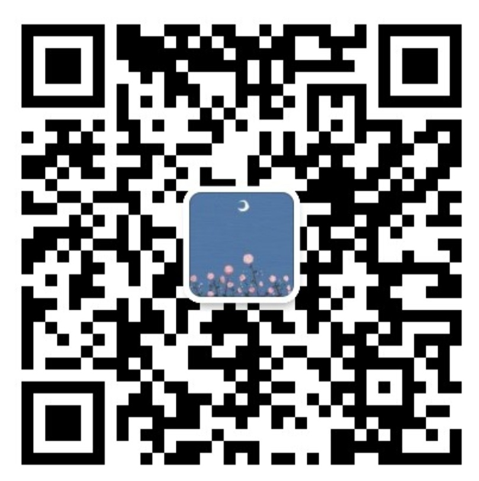

做人呢，最要紧的就是要开心啊。关于我 关于我 我叫卢媛媛，一个00后普通大学生。看过很多国内外大佬的网站设计，有的页面效果酷炫，有的干货满满，有的风格独特......看了他们，感觉到自己的前端技术只能算是一个菜鸟。有的布局风格大胆，神仙配色，艺术感满满，让我感觉自己的设计里都感受不到美的存在。还有一些酷炫的页面动画效果，膜拜大佬。 “一千个观众眼中有一千个哈姆雷特”每个人对美的感受也是不同的，但每个人都有发现美的眼睛，不局限自己的思路，不封闭自己的感觉，多看看别人的设计，也许就能迸发出设计的灵感，只有不断地汲取知识，才能充实自己，无论未来从事什么，现在的储备总会在将来的某一天起到作用，毕竟，机会总是留给有准备的人。 认真生活，努力向上。喜欢上学习，热爱生活。每天看看书，听听音乐是一天中的放松，学习任务也许会比较重，但是人嘛，总要成长，自己面对，对自己负责，努力完成它，做好它，才不负自己的时间。 喜欢认识新的人，扩大朋友圈，欢迎Q我哦！ 关于我 网名：达吧迪吧达 | 卢媛媛 职业：在校大学生 个人微信：dabadudu23 邮箱：1545443548@qq.com 个人微信 